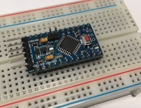

On-line Arduino Sensors and DIY LoRa Tutorial
Forewords
This online tutorial on Arduino, Sensors, and LoRa technologies has been developed by University of Pau, France, in the context of the WAZIUP and WAZIHUB projects funded by the European Union in the H2020 research program. The main objective of this online tutorial is to provide comprehensive and guided training materials to be used in training, hackathons, bootcamps, entrepreneur's days,... that are organized by WAZIUP/WAZIHUB across Africa. The main contributors are Mamour Diop, Muhammad Ehsan and Congduc Pham. Our main current research focus is on LoRa networks and IoT but this tutorial first start with basic of Arduino and sensor programming to understand sensing systems that are the foundation of so-called Internet-of-Things (IoT) concepts. Then in a second step, we will introduce LoRa radio technologies and show how to build low-cost, long-range and energy-efficient IoT devices.

WAZIUP is a technology-driven EU-Africa project developing a fully open source IoT end-to-end (sensors, networking and software) platform, specialized to meet African needs/applications in terms of cost, energy, internet connectivity and simplicity. Congduc Pham is the scientific leader of the "Open IoT sensing and communication platform" workpackage which tasks are to develop an open, low-cost and long-range LoRa IoT framework. Interested readers can find many resources from our github on the low-cost LoRa IoT framework and from Congduc Pham's tutorial/talks web page.


WAZIHUB (in Swahili for Open-Hub) is an innovation project for Africa aiming to create an open hub of IoT and Big data cutting-edge and African grade solutions, co-designed by African people. The vision of WAZIHUB is to exploit IoT potential and share IoT technologies best-practices through the involvement of innovation communities and stakeholder (e.g. young entrepreneur (including woman), startup, developer, innovation hub) from local district, regional, national and African-wide. The project aims to enable the creation of Open Hubs throughout Africa where IoT technology solutions can then be adapted to match local service needs. The project goal is to iterate and extract value from spining-off value-added IoT innovative services (e.g. monitoring, controlling, data analytic) based on the technologies developed in WAZIUP.
Getting Started With Sensors

A device that detects the changes in electrical or physical or other quantities and thereby produces an output as an acknowledgement of change in the quantity is called as a Sensor. Generally, this sensor output will be in the form of electrical or optical signal.
The world is full of sensors: from passive infrared sensors in motion detectors, to carbon monoxide detectors in air conditioning systems, and even tiny accelerometers, GPS modules, and cameras inside your smartphone and tablet—sensors are everywhere! The variety of sensor applications is remarkable. Thanks to the proliferation of mobile devices, sensors are now remarkably affordable, meaning you can combine inexpensive sensors and microcontroller boards to make your own devices.
In this tutorial, we will learn how to process sensor data with Arduino popular microcontroller development boards for electronics enthusiasts. With the ability to control components such as buzzers, LED’s, servos, motors, LCD’s,... through analog and digital pins, Arduino boards have become the go-to selection for users that are looking to start into electronics, firmware coding, or automation. For more details visit the Arduino web site.
For users who want to go further and understand in more details sensor technologies, they can have a look at this page on Sensors and Transducers from www.electronics-tutorials.ws. Then, they can also look at this very interesting Adafruit tutorial on sensor calibration.
What is Arduino?
Arduino is an open-source platform designed for artists, designers, hobbyists, hackers and anyone interested in creating interactive objects or environments. It consists of a circuit board, which can be programed (referred to as a microcontroller) and a software called Arduino IDE (Integrated Development Environment), which is used to write the computer code and upload this code to the physical board.
Arduino can interact with buttons, LEDs, motors, speakers, GPS units, cameras, the internet, and even your smartphone or your TV! This flexibility combined with the fact that the Arduino software is free, the hardware boards are pretty cheap, and both the software and hardware are easy to learn has led to a large community of users who have contributed code and released instructions for a huge variety of Arduino-based projects.
The key features of Arduino are listed below:
- Arduino boards read signals from different sensors through analog or digital pins and can turn those signals into an output such as turning LED on/off, activating a machine, connecting to the clouds and many other actions.
- You can control your board functions by sending a set of instructions to the microcontroller on the board via Arduino IDE (referred to as uploading software).
- Unlike most previous programmable circuit boards, Arduino does not need an extra piece of hardware (called a programmer) in order to load a new code onto the board. You can simply use a USB cable.
- Additionally, the Arduino IDE uses a simplified version of C++, making it easier to learn to program.
- Arduino provides a standard form factor that breaks the functions of the micro-controller into a more accessible package.
The main components of the Arduino ecosystem is illustrated below with the main Arduino boards that made the whole Arduino concept successful.

In the following paragraphs we illustrate examples with the Arduino UNO Rev3 version as the hardware platform but other Arduino boards can be used such as the Arduino Nano or the Arduino ProMini.
You can download all examples of this tutorial here. The .zip archive also contains all the required libraries for the examples. Unzip the archive to get a sketch folder that will be used later on with the Arduino programming environment.
Blink Example

The Blink example shows the simplest thing you can do with an Arduino to see physical output: it blinks the on-board LED or a LED with 220 ohm resistor (see Figure). A LED usually has a shorter pin which is the + pin. It is on this pin that one should place a resistor to be connected to the Arduino pin to power (thus controlling) the LED. This program turns on an LED on for one second, then off for one second, repeatedly.
There are mainly 2 functions: setup() and loop(). setup() is called once mainly for initialization purposes and loop() will loop forever and mainly codes for the behavior of the device. There are then specific functions and keywords for Arduino boards to read from various input pin and eventually act back on the system by writing to some output pin. More details will be given in the Introduction to Arduino IDE section.
Blink Code
/******************** * Program: Blink * Description: Turns on an LED on for one second, then off for one second, repeatedly. * This example code is in the public domain. ********************/ // Pin 13 has an LED connected on most Arduino boards. int led = 13; // the setup routine runs once when you press reset: void setup() { // initialize the digital pin as an output. pinMode(led, OUTPUT); } // the loop routine runs over and over again forever: void loop() { digitalWrite(led, HIGH); // turn the LED on (HIGH is the voltage level) delay(1000); // wait for a second digitalWrite(led, LOW); // turn the LED off by making the voltage LOW delay(1000); // wait for a second }
Using breadboard

It is common, and practical when experimenting and prototyping, to use a breadboard to connect the various components. Small form factor Arduino board such as Arduino Nano or Arduino ProMini can be directly plugged on the breadboard, but for large form factor boards, such as the Arduino Uno, the breadboard is used to easily connect sensors or various modules.
A breadboard works as follows. Horizontal lines are linked together, but not across the middle divider. Vertical lines are usually for VCC and GND lines, and are continuously linked. On most breadboards, you have therefore 2 VCC/GND pairs, one on each side of the breadboard.

It is a good practice to connect the power and ground line of the breadboard with the corresponding pin of the Arduino board so that all sensors can easily be connected to those lines.
The previous example with a led can be made on a breadboard and easily extended as power and ground line are ealisily available on the breadboard. Here, in the led example, each led's power pin is controlled separately and this is why they are directly connected to a digital pin of the Arduino board.